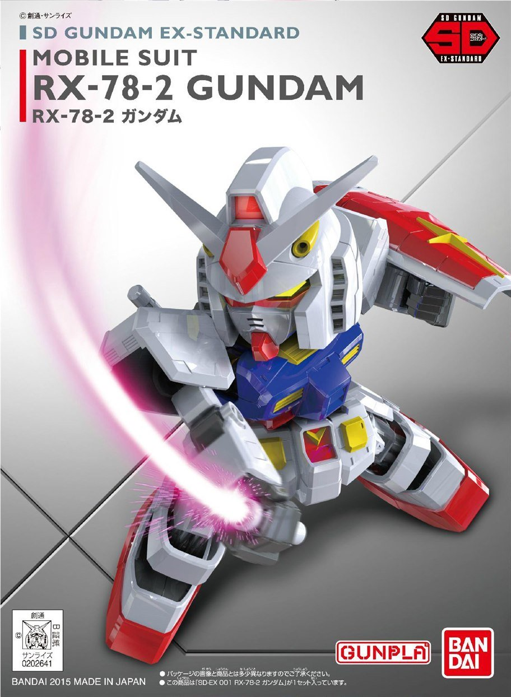

SD Gundam is a media franchise that spawned from the Gundam franchise. SD Gundam takes the mecha from Gundam and expresses them in super deformed and anthropomorphic style.
SD Gundam originated from a contributed illustration of a junior student from Nagoya by the name of Koji Yokoi to the "Model News" magazine that Bandai was issuing in the 1980s. The illustration is of a Gundam but with an unusual proportion where the overall height of the Gundam is equal to twice that of its head.
Press back to go back.
SD Gundam